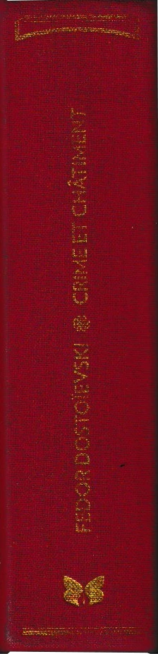
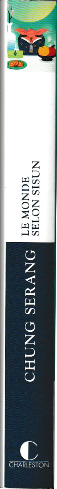
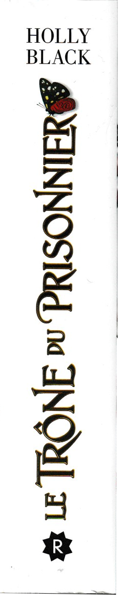
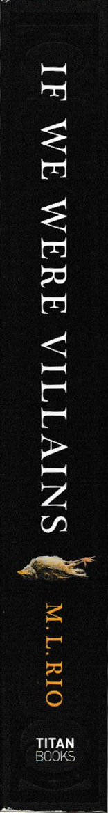
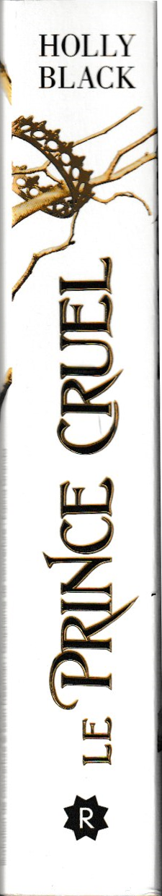
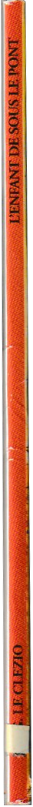

Book reviews
I'm only a girl who loves films/books/fashion/facts...
No one for you really but an entire universe for me so if you're upset about something here don't suffer it,
just leave.
We're all humans and I just want to spread my thoughts and develop into a GREAT women with an amazing energy
and brain.
So with love,
and excitement,
always Di'üéÄ
All you got to do is scroll to the side and click on books to see what I thought about it !
La neuvième maison - Leigh Bardugo
To be Read
Vie et enseignement de Tierno Bokar - Amadou Hampâté Bâ - Rebecca Yarros
To be Read

Oui mon commandant - Amadou Hampâté Bâ
To be Read
Au bonheur des dames - E. Zola
To be Read
Babel - R.F. Kuang
To be Read

Crime et châtiment - Fyodor Dostoïevski
To be Read

If we were villains - M.L. Rio
Read

The ballad of songbirds and snakes - Suzanne Collins
To be Read

The secret history - Donna Tartt
To be Read

The adventures of Amina Al Sirafi - S.A. Chakraborty
To be Read

Macbeth - Shakespeare
Read ??? - 01/03/2025

Le monde selon Sisun - Chung Serang
Read ??? -17/01/2025
I find it fascinating how every member of your family or even your entourage knows a different part of yourself that makes a whole.
This book was so soothing and new for me. It was my cousin (hey love!) that gifted it to me, as well as several other books that
I cannot wait to read !! I tend to stay in my comfort zone when reading but it was a very pleasant surprise to like this one. If
you're in need to be brought back to a warm and refreshing environment go for it. It helped me go past my reading slump, I took my time reading it.
It made me think about my own family and friends (that are all so sweet) but also about the more ignored themes like: racism (to see all minorities are facing the same hardships *sigh*),
agressions on women, toxic relationships and manipulation. The power Mathias had over Sisun because he was white and famous
(like, people were condemning Sisun for getting away and "causing his death", when he was just a dramatic freak).

Le trône du prisonier - Holly Black
Read
L'héritier trahi - Holly Black
Read
Dark heir - C.S. Pacat
Read

Le petit prince - Antoine de Saint-Exupéry
Read

Les histoires des Prophètes - Amina Rekad
Read

Chess Story & Letter from an unknown woman - Stefan Zweig
Read 30/08/2024 - 02/09/2024
This book fascinated me with its poetic mess. The quality of the writing really appealed to me. I read it mainly because I was obsessed with chess, and I was surprised to discover
the unraveling of the true main character from a spectator's eyes. It was a wonder he managed to regain control in the end—it was strangely hopeful to see someone fight themselves
to stay on the right path. The book depicts both the cruelty and the wonder of what solitude can make you achieve, with some very interesting characters.
Heartwrenching how she revolved around a man who didn’t acknowledge her efforts. This woman was desperate for love, even though she had a good life. How futile his existence seemed,
while she was so deeply in love with him. It’s like when you have a crush on someone who doesn’t even notice you—investing so much while they stay oblivious. I really liked it, so
I might continue reading Zweig's works—he has a way of diving deep into human emotions that hits hard.
Cleopatra and Frankenstein - Coco Mellors
Read
The end felt bittersweet: their relationship was beautiful but still doomed to failure It is the kind of book where you learn random facts if you pay attention. It is a story about
relationships; dull-hurting, sad and beautiful à la fois because love doesn't make it all. It is the first time I happen to genuinely like this type of book and not feel too bored.
I guess it's also because everytime I read a book it has to be on the right time. As if it clicked with whatever I live at the time. How we're all built by our relations.

Le grand vizir iznogoud - Goscinny-Tabary
Read

Hamlet - Shakespeare
Read

The Picture of Dorian Gray - Oscar Wilde
Read on July 17 2024
How can someone DRASTICALLY change like so? That is scary! I really hope no human can do so, but
I know that’s being delusional. If only lord Henry, aka Prince Paradox, had shut is mouth and just went! And
Oh Basil, our precious beloved Basil… A wonder I got to go through the various random enumeration of historical
facts and objects that Dorian came to learn about! That was so long and tedious to read as a French native. The book was clearly an interesting experience but I hope not
as such the as one Dorian read during his lit’le journay. Like imagine if I randomly decided that this book changed me and start doing the craziest things known to earth because of it??
(The guy was fully convinced he wasn’t, at any moment, at fault). The ending was exquisite dramatic and beautiful. Just as I like ‘em.

Comment le prince Cardan en est venu à détester les histoires - Holly Black
Read 01/12/2023
How delightful to plunge into this universe again. To learn more about Cardan was really comforting. He doesn’t
seem to be such a meanie now? He absolutely loves Jude and that’s, oh so great. I loved the different stories
they were well written and told. I love it, I love it, I love it. And far most, the moment where
Cardan is on earth spending moments with Jude, Viv, Heather and Oak. Plus it was so funny to think of Madoc living there (before I learned how he lived on earth in the prisoners throne)!

The midnight library - Matt Haig
Read 14/10/2023
Learning about a possibly adorable and funny cat and then learning he’s been hit by a car was rough
for a 6th page. A depressed but still hopeful version of 16 wishes. WHY wouldn’t they give her some memories
when she enters a new life, so she’s not having zero clue of whatever she’s doing! I CANNOT WITH THIS STRESS I
HAVE ANXIETY!! I really like Hugo’s theory about life quantum page 144 or so. The last third especially felt like
a letter to a younger self, to encourage her to continue on her “when I grow up I will be” journey and I really loved that.
To finish with, it was such a warm book it healed my innerself.

The one - Nicky Lee
Read

Libérons Les étoiles - Hafsah Faizal
Read 30/08/2023-13/09/2023
Arghhhhh I feel sooo nostalgic. It was sooo great eventhough I struggled to get through it. Everybody almost died or literally did or what?
The Zumra was oh so loveable. And Nasir and Zafira? Oh my I couldn’t breathe they were sooo cute. I add Haider in the list of great villains
(yes. I was seduced). And the WORLD BUILDING? The author did such a great job. Well I just loved it I must say. To be honest I clearly cannot
remember all the things. Over 1400 pages guys that‚Äôs too much for my brain. But I saw a good part of all the hints and it was done sooo very well I‚Äôm glad I read this series üòå
Chasseurs de flammes - Hafsah Faizal
Read 23-26 august 2023
IM INTO IT! At first I was sooo bored and hated Zafira’s chapters but when they arrived at Sharr?
OH. MY. All I needed was Deen to die. Seriously what's the point of being you Deen? (No hate :))And now that the
tension is here‚Ķ I‚Äôm like don‚Äôt stooop. ü§≠.
Anyway I just love Altair! If he dies I stop everything (yes Yasmine I’m talking about yah).
Also the family tree is soooo messed up seriously. At some point I started to reread some pages cause
I was like wait what?. But it was SO GREAT.
I screamed but I screamed LOTS there was too much of EVERYTHING.I absolutely loved it and was pretty much surprised to be sad at Benyamin’s death.
Now trêve de bavardage and give me the next volume I cannot be left with all this tension. Speaking
of tension ... Why is the lion of the night so freaking charismatic, there's no business
for me to be more interested by the villain! But well...Totally understand Anadil.

La chasseuse et l'alchimiste - Allison Saft
Read 13-17/08/2023
Evelyn gave me Mother Gothel vibes. Can we talk about the fact that Wes literally called Maggie ugly for like,
half of the book? Well. It was an okay book, but I would've liked if the plot was a bit deeper. I've had the impression to be here
only for the plot, that is the love story and the hunt since all the other potentially interesting things about the
book were shut down pretty fast. I'm kind of disappointed 'cause I really bought the book for it's cover.
Dark rise - C.S. Pacat
Read 01-08/08/2023
The amount of secrets in this book is crazy. I loved it. The fact that the main character is "discovered" to be the villain was sooo satisfying. It's so original (yes, I'm obsessed with villains they just tend to be more interesting to me).
It really was great to read this book, love the knight, london, power, dark, secret, bourgeois and astonishing vibe (in my notes I added -y or ish to every word here), with the writing that made me dive indo the freaking story.
Can't wait for the next volume, to laugh demonically while reading the plot in a few sitting, again!

King Lear - Shakespeare
Read 16-19/07/2023
Tout est bien qui finis bien (well not really i guess) a bit violent, eyes took out? Like in what world! King Learwas so right and wrong at the same time.
Fortunately we had Kent ! Found all the existing typos of plays. Really enjoyable and dramatic to read! I'm gonna read all Shakespeare's works FOR SURE.
La poignée de poussière - Amadou Hampâté Bâ - Rebecca Yarros
Read

Paradise kiss - Ai Yazawa
Read
The importance of being earnest - Oscar Wilde
Read
Animal Farm - George Orwell
Read
La machine infernale - Jean Cocteau
Read

Mia et le migou - Jacques-Rémy Girerd
Read

Five feet apart - Mikki Daughtry, Rachael Lippincott, Tobias Iaconis
Read 05-14/07/2023
I remember reading this book back in 2018 because I was dying to watch the movie (Cole Sprouse was in it, and I loved Riverdale back then, so I had to see it). I couldn’t find
it anywhere, which led me to get the written version instead. Reading wasn’t unfamiliar to me, but this was the first novel that truly belonged to me, and I dove into it headfirst.
I took it absolutely everywhere and was deeply affected by the ending. One day, I finally got to watch the movie, and of course, it disappointed me—it wasn’t even close to what my
imagination had crafted. Now, rereading it, I realize how much every book I read shapes me. It’s crazy!
Anyway, let’s focus on the book. My opinion, four years later: it was really cute. Not super deep, but perfect for a pre-teen looking for a funny, heartwarming story that also offers
a small window into a topic like illness. The movie or the book? Well, that’s for you to decide—I have no idea. And honestly, what kind of question is that?
My year of rest and relaxation - Ottessa Moshfegh
Read 27/04/2023 - 02/05/2023
What exactly did I just read? I wierdly loved it. Kind of a lot explicit though. I like and hate the main character. All the characters are wierd in some way. The death of Reva was
kind of obvious to me with the dates and all but still ! I felt so related to the main character about the sleeping for one wholee year to reset your life. But well if you're
able to do that: You wouldn't happen to feel a bit... privileged, would you?

If we were villains - M.L. Rio
Read 02-04/05/2023

Les fleurs du mal - Baudelaire
Read

Saison d'orages et de silence - Roseanne A. Brown
Read

The Stranger - Albert Camus
Read 25/01/2023
A book that I find strangely very human because of the character’s honesty. It’s impressive how his behavior feels like
the most normal to me—he doesn’t lie to himself—yet he’s still portrayed as horrible, insensitive, and an outsider.
However, when thinking about justice, I realize that hypocrisy is so deeply rooted in society that not acting according
to its norms makes you cruel, strange, and condemnable.
Munyal: Tears of patience - Djaïli Amadou Amal
Read 08-10/01/2023
A book that portrays the reality of marriage and polygamy. Women reduced to their gender. We follow three of them, two stories
and voices intricately intertwined—Ramla, Hindou, and Safira. Forced marriage, domestic violence, and polygamy. To all of them,
they said "munyal", to all of them, they said patience in the face of a sealed fate they would have to fight alone.
The entire book is dictated by honor, modesty, lies, hypocrisy, the reduction of women, ignorance, cruelty, rumors, and status.
And that is something that outraged me.
In the end, we have three broken women. And to think that Hindou’s own family didn’t consider or help her, leaving her trapped;
or that Safira remains stuck in a cycle fueled by rumors and her husband’s desires. And to top it all off, the open ending is
beyond frustrating — what happens to each of them? Is there even a sliver of hope for Ramla’s survival?
Love from Mecca to Medina - S.K. Ali
Read
This one seemed WAY better for me than the first one. I STRUGGLED getting through it but in the end I
just gulped it. I think this book was sooo important that I needed to read it at the right time. For my faith (it
was so helpful on an incredible scale, lately I felt really disconnected to Allah and this book just narrowed my
sight of everything +other things ) but also for myself (the married life and how you deal with problems) it
just helped my religionship? as it helped my relationships. It just seemed so realistic I found bits of myself
in every pages. It undid and made me unlearn the fact that human are perfect through faith and don’t have any flaws and
that pilgrimage is easy.
Déclaration des droits de la femme et de la citoyenne - Olympe De-Gouges
Read
I DEFINETELY GOT PTSD OVER THIS ONE. I felt like a miserable bureaucrate when I had to learn quotes AND articles for my exams. Thank God it's all over

Reunion - Fred Uhlman
Read 11/12/2023 - 02/01/2023
I could relate, and still relate, a lot to Conrad's character (especially his ideas about school in chapter 4 or friendship). He may be annoying and
very naïve in his wish for a totally open and secret-free friendship, but I understand him. To me, the goal in life is to be surrounded by the right
people. It's clear that Conrad and Hans were true friends who protected each other, especially Conrad, who avoids the problems of his mother’s racism
toward Hans, lies in his letter, and eventually participates in a plot against Hitler. Through his poetic writing, the author shows the complexity of
the situation, the senseless hatred of the time, and highlights the incoherent and hateful nature of the Nazis (Conrad's mother's absurd fear, insults
against religions...). Anyway, it's a well-written short story that left me in shock at the injustice that affected this beautiful friendship that could
never be. To me, the saddest part is that Conrad lied to protect Hans, and they were never able to meet again to explain things to each other.

Incendies - Wajdi Mouawad
Read 04/11/2022
Um, wow! This book clearly shows the reason for my attraction to reading. It was powerful. Whether it was the twists and turns, the
moments of self-questioning, or the ending. It clearly depicts intergenerational trauma through significant crises. I don’t usually
read this kind of book, but after this one, I’m intrigued by the genre. The book addresses themes such as the cruelty of war, rape,
love, birth, family, silence, and secrets. The last letters were what struck me the most, and once the connections are made, a loop
forms, shifting from a beautiful love story to an unfortunate and heartbreaking tragedy. With a modern adaptation of the Oedipus myth,
Mouawad highlights several violent and difficult issues in a story about a family in crisis, trying to uncover its secrets.
(+ I would have loved to know what happens to Sawda).
At the time I listened to a really interesting podcast in french: Trauma générationenel & popculture by Popculture inclusive
La forme d'une ville change plus vite hélas, que le coeur des humains - Michel Roubau
Read
See how long and boring the title is? I'll just say it didn't help me read it. I only read a few chapter and could absolutely not say anything about it.

Flocons d'amour - John Green, Lauren Myracle, Maureen Johnson
Read 29-31/12/2022
Three interconnected stories about the lives of different teenagers, with the last one tying the first two together. This final story wraps everything up with
a beautiful happy ending, clear and seamless despite the three different authors' voices. I really loved it, but it’s a shame that the adaptation doesn’t match
the book at all. It was super funny, light, and comforting.

Les sept maris d'Evelyn Hugo - Taylor Jenkins Reid
Read 18-19/12/2022
A very beautiful love story, realistic both in its characters, who stay true to themselves, and in its twists and turns. They are well incorporated into
the unfolding and context of the story (the cruelty of the Hollywood world, marriage, homosexuality, racism, and love). I also really liked the author's
way of introducing topics without saying too much, as she omits certain details that later become decisive clues. (Although I guessed almost everything,
which somewhat spoiled my reading.) However, I found my reading to be long and was disappointed by the plot twists hyped by the BookTok community.
Aside from that, I can still say that the emotional developments were pleasant and well-written, just like the beginnings of the intrigues. It wasn’t a favorite,
but I remember enjoying the continuity of the characters’ determination. Also, the interview/article format was refreshing and sped up my reading.
Love from A to Z - S.K. Ali
Read 21-28/12/2022
Wow! I really didn’t expect to like this book (reading slump after many disappointments), but in the end, it was very inspiring, comforting, and sweet. Not to mention
the topics I relate to a lot, which will surely help me in life. We are shown two different ways of thinking and fighting injustices (passive or active). Honestly,
the beginning was slow and a bit flat, but the more I read, the more it pulled me in. I finished this enjoyable read with a lot of self-reflection. The English was
easy to follow thanks to the diary format.
Juste la fin du monde - Jean-Luc Lagarce
Read
Studied this book so much I might have ptsd but genuinely liked it and loved understanding new things by studying it

Tortues à l'infini - John Green
Read 12/2022
It is my second read and I know I liked the book the first time. I still do. It allowed me to grow once again and to understand that as Aza I had anxiety. Not exactly like her but yeah.
Green's books have always been a safe place for me as they were the first books I owned so I'm quite biased when I give my opinion on them. Each of them hold a part of me and this one
helped me be a bit more mindful about how I treated my friends when I felt anxious. (try not to drown them in your problems that is).

Six of crows - Leigh Bardugo
Read 05-12/11/2022
I liked the book, but it missed something. I think I should have read it before seeing the show that I absolotely loved (only the crows parts)

Normal people - Sally Rooney
Read 28-30/10/2022
Did I like this book? Honestly, I don’t know. It was so unexpectedly realistic that I’m just confused. The book traces
an ordinary life with special characters (what does "normal" really mean?). Throughout, we face a frustrating complexity,
blending nonexistent communication and societal questioning.
The lack of dialogue markers and the confusion of pronouns reflect the absence of communication; capitalism, society's place,
and people's views on the problems of society. All of this is woven into the not always healthy "in and out" ambiguity of Connell
and Marianne’s relationship. With an open ending that makes me question the purpose of the story (maybe a form of awareness?).
It was still enjoyable and refreshing to read, and I’ll have to reread it when I have more maturity and knowledge to move beyond
the confusion and truly understand the stakes of this story, which has potential that I can’t fully grasp yet.

L'as de coeur - Morgane Moncomble
Read 22-23/10/2022
I think dark romance is not my thing... The book was okay but I was here only for the chess part when there was almost none of it. So I was a bit upset about it.
Anyway it was still good to read for the characters but that is it for me.
Le chant des sans repos - Roseanne A. Brown
Read 22-26/08/2022
An immense crush (heart emoji). The universe is so beautiful, it feels good to have diversity. The blend of different cultures is really well done. We find many elements from the
era of the pharaohs (the Kennouan empire, necropolis, beliefs...) as well as from slavery (Malik and his sisters' perilous journey as refugees, the treatment of eshrans, raids...).
The characters are wonderful, I truly love them all. In the end, there are no clear-cut villains or heroes, but a lot of betrayals. I was able to guess a lot of things, but the plot
twists were still great. I really enjoy the action scenes, they were so hype and badass. The developments of each character, which allowed me to find small clues and explanations.
The fact that Idir is now a sort of alter ego for Malik! I hope they end up becoming allies in book 2, and especially that Malik becomes much more powerful. I’m also excited to see
how Karina will control her powers. Nyeni/the hyena was literally everywhere, I didn’t realize it, she was almost the main character. I want to learn more about their powers and see Idir
again because I find him hilarious.

Gatsby - F. Scott Fitzgerald
Read 04/08/2022
I had a bit of trouble understanding some pages. Gatsby hoped to integrate into the aristocratic world, to win Daisy's love, just as he hoped his evolution and his world would appeal
to Daisy and that she would deny her feelings for Tom. Similarly, Myrtle hoped to stay with Tom, and just like Wilson, he hoped to avenge his wife's death—hope keeps us alive. Gatsby
spent his time scripting his life with Daisy. He created an identity for himself—wealth, grand projects, acquisitions. All of this to be worthy of his beloved. This, in turn, made
her a trophy, as it would allow him to enter the aristocratic world. It’s about belonging to East Egg, not West Egg; it’s about reaching the green light. Gatsby eventually burns his
wings when Tom realizes his closeness to Daisy. Gatsby then realizes that no, you can’t change your past. He had already sensed the beginnings of disillusionment, everything becomes
more dull and less meaningful as he gets closer to his goal. He imagined a perfect future, and when he reaches the light, he sees his reality. This is how the disillusionment of the
American Dream is presented to us: through class struggle and a love story. Gatsby takes the role of a self-made man, driven by his past and a great deal of hope.
"Only aristocrats, those born into wealth, survive the spectacle. The others contribute, but they don’t partake."

Jamais plus - Colleen Hoover
Read 27-29/07/2022
I must say: No wonder why it's the only Colleen Hoover book I own.
Now bear with me because this book has been a journey of opinion. I started to read it a bit before all the controverse.
At the time, I didn't took great attention about the story and I liked the book in a "Oh a book about domestic violence that is written in homage to whoever it was for". Then...
I started to get annoyed by a LOT of things: The homeless guy plot? Like why, what, how? The lover who happens (yeah, as if meeting him while he was throwing a tantrum wasn't a redflag) to be a violent guy?
The "to Ellen" letter: should I say I find that Ellen is problematic and having your character writing her odes is questionable? There I said it.
All this, shows the problem of dark romance in general: romanticising life a bit TOO MUCH. After the controverse, I just think that Colleen Hoover is simply not for me, as this pattern is in all her books. PAS MON DELIRE like we say in France.
The book was more about having a maximum of questionnable things that just annihilated the "being in that type of relationship makes you accept the unacceptable and you need to get out of it" idea I suppose the author wanted to express.

L'attaque des titans - Hajime Isayama
Read
The only manga I could like for ever I think

The fault in our stars - John Green
Read 07/2022
The book was good, but it's clearly not my favorite. This one marks the end of my journey with J. Green because I’ve grown and am moving towards other horizons. I really like the way his characters think: detached,
free, and sarcastic; it helped shape my personality during my adolescence. I would love, like Hazel, to meet the author and ask him questions, with the same risk of disappointment. Anyway, the psyche of people in
all kinds of situations fascinates me, so it’s time for me to explore other authors.
About the book: The side effects of dying. These effects take the lead, you can‚Äôt control anything, and you just have to deal with it. (Re-reading this, I realize how much of a tortured teen I was üòÇ, because I read
all these books when I was about 13-14). The characters try to live life to the fullest. Broken people, unanswered questions, strong emotions, losses. All this in a world that keeps turning despite it all. I want
Augustus Waters as a friend. The parents are strong and good, and the characters love each other: it’s crazy how hardships bring people closer. But in the end, I don’t understand the hype around this one. There
are better books by John Green.

We were liars - E. Lockhart
Read 26-27/05/2022
A story I would call sadly comforting. It presents a wealthy family torn apart by money and possessions. The summer setting hides a huge mystery, throughout the book you keep asking: What happened during summer '15?
We have three spoiled princesses, focused only on their own interests, obsessed with appearances in front of others, and dependent on their grandfather and his fortune, despite all the opportunities given to them
and their perfect upbringing. We also have the grandfather, the great patriarch in mourning. He uses his power to control everything, both love and inheritance, making hidden threats to his family. He is disappointed
by the way his descendants live; he doesn't consider them worthy of the magnificent Sinclair family.
The question of need versus necessity is often raised, like in the sisters' arguments over the inheritance (the houses), or the gifts Cadence receives, justified by a non-necessity. Throughout the story, the liars play
a role of rupture. They refuse to appease the grandfather and disobey the adults, which allows them to break free from the patriarch and become independent, unlike their mothers. The liars break all the rules by destroying
the "seat of patriarchy" during the fire (it’s clearly explained on page 255, number 68). The truth is revealed to Cadence two years after her accident. She didn’t hit her head while swimming, but actually burned herself
trying to save the liars from her mistake. They died, along with the dogs. She feels so guilty that she invents a story.
Thus, summer '17 is just an illusion. She was alone at Caddledown, grieving while cleaning the property. If you pay attention, the clues were clear: no replies to her emails, no hand-to-hand exchanges, her family getting closer,
more manic, or having nightmares... The maxims define each of the characters, the tales talk about the past, but I didn’t understand the secret behind the numbers and who kills the princesses in the story (the dragon or the patriarch?)

I fell in love with hope - Lancali
Read 11/09/2022 - 25/09/2022
I cried so many times reading this book, it’s both so sad and comforting at the same time. The story made me feel nostalgic, I don’t even know what to say, I’m still crying, I got so lost in it,
it was absolutely beautiful. Every character is so endearing and caring (except for Neo’s father, OBVIOUSLY). It shows how life is full of obstacles, good moments, and so much more. Beginnings,
endings, and in-betweens. It makes me want to cherish everything more. It was a bit long and complicated to read since it was my second book in English, but I enjoyed it more than anything else.
Anyway, the words used, the quotes, the symbols, the déjà vu, the titles—everything was so beautiful. The writing is just incredible. I never thought I’d cry, but I did the whole time. Even during
the positive moments, I cried. If this author has other books, TAKE MY MONEY. This has become one of my favorite books. I can’t wait to have it in paperback so I can annotate it. It’s written like
a poem, with rhymes (parallels), stanzas (chapters), the writing style, and the references. The characters are also really well-developed, it’s so realistic, and it impacted me deeply, both in the
way I think and emotionally; laughter, tears, love, and hope.

The Queen of nothing - Holly Black
Read 13-14/07/2022
I felt so nostalgic when I turned the last page of the book, even though there’s still a hint of a continuation, it’s still the end of Jude and Cardan’s story. People told me this book was
terrible, but honestly, I don’t think so at all. We get all the answers, a development of the characters' feelings, and their growth, and a cool ending. I didn’t want to put the book down,
and I finished it super fast. I was happy to see that Jude and Cardan didn’t become all sappy. But there were several things that outraged me and made me feel stupid, like “Is this a JOKE?!”
Clearly, this was a book for settling scores between the characters. Almost all the villains got killed (ptdrr). The fact that Cardan recognized Jude right from the start was incredibly sweet,
and it led to a fight where they teamed up against Madoc and the Court of Teeth, despite my expectations.
I’m shocked that Madoc tried to kill Jude, but it brought them even closer together in the end ig. The reconciliation between Jude and Taryn happened solely because of their blood bond, like I said.
They’re sisters, and sisters are supposed to help each other, no matter what. I think Nicasia is still there because she’s “friends” with Cardan.
+ Me, in chapter 23: “Nah, it’s a happy ending, don’t worry, Cardan’s going to be Cardan again” *sobbing* Anyway, my favorite series.

The wicked king - Holly Black
Read 29/05/2022 - 01/06/2022
You really played with my feelings üò≠. How can I put this... An amazing book. Every detail serves a purpose, betrayals everywhere. We learn more about the characters. The return of Balekin,
who is clearly a huge victim (ptdr), they really made him believe he’d be king one day? We still hate Locke and Taryn. I hope Heather forgives Vivi. Jude was OVERWHELMED, like, seriously,
she’s going through so much and she’s super smart (because honestly, I’d be dead already in this world full of riddles). They sold me on Cardan, and now I like him — he was underestimated.
But what he did at the end? That really pissed me off, I was FLABBERGASTED. I think Jude is going to team up with Madoc and use the same methods as Cardan to get revenge. But Cardan is bold, really bold,
so we’ll see who wins in the end. And why did he keep Nicasia? Anyway, we’re still waiting for King Ben and Asha too. I just don’t get Cardan, like WHY?

The lost sisters - Holly Black
Read 27/05/2022
A short story in the form of a letter from Taryn to Jude. Now that I understand her reasoning... well... STILL HATING HER. She’s borderline selfish when it comes to love, and Locke is so vicious.
He clearly justifies himself by saying, "Don’t forget that we don’t love like you do." They both play on their desirability. For example, the situation with Eidir shows how Taryn will likely
integrate into fae society. She could’ve told Jude everything, but instead, she chose to secure her future with Locke, even if it meant hurting her twin. I didn’t get her explanation, and the
only thing that could make her worthy of forgiveness in my eyes is the bond of blood and nothing else. Locke is manipulative, “a sign of love”? and obsessed with Jude’s unpredictable actions.
They chose each other for a love that is inconsistent and versatile, leaving Jude, who wasn’t like them, behind.

The cruel prince - Holly Black
Read 04/2022
In one word? Astonishing. First, because I was expecting a romance, and second, because THAT ENDING?! Incredible. It's centered around a political struggle, but it's anything but boring.
I loved it so much that I had a reading slump afterward—I needed the sequel (though I admit it took me a while to finish this one too). I also wasn’t expecting the violence, but it made everything so much better.
And Jude’s plan? It was predictable, but she said so many other things that my brain just shut down—I didn’t get anything. I completely forgot the most important human ability in this book: LYING.
Anyway, it was amazing. I can already tell this is going to be my favorite series. I loved the characters, and especially the fanart from the community. Can’t wait to read the next one.
+ Um, Taryn and Locke’s actions? OUTRAGED. I never trusted Locke anyway.

Looking for Alaska - John Green
Read 21-24/02/2022
I found the book comforting. We are introduced to the lives of "typical" teenagers who are simply enjoying life. It was both hilarious and philosophical, with characters you can’t help but love.
I thought the event that triggers the second part of the book would be the prank they were setting up little by little, but not at all. The actual event—Alaska’s death—completely shocked me. I
didn’t see it coming at all. The transition was so abrupt that it puts us on the same level as the characters. It was still incredible. The way the characters honor her is beautiful, and the
mystery around the how and why of her death adds an intriguing layer that, as the Colonel would say, is very Alaska-like. The insertion of the religion class is a bit hard to grasp at times,
but it plays an important role in the story, especially with the final assignment that marks the end.
THEORY: I believe Alaska did take her own life, but she probably did it impulsively, with the intention of ending everything—thinking she was fixing her mistakes and stopping herself from
"ruining everything." She must have regretted it the very next moment, but it was already too late, and she died. In short, she couldn’t take it anymore and acted in a moment of weakness, amplified by alcohol.

The Guinevere deception - Kiersten White
Read 01-06/03/2022
Originally, I didn't like stories about Arthurian legends, but this time, I really enjoyed it. The setup is quite long, and there's not much exciting at the beginning. The story truly picks up
towards the end, a bit after the middle of the book. Throughout the story, we search for the "villain" alongside the main character, and I got it wrong as many times as Guinevere did. Then,
there's a pretty big shock when we discover part of the truth, which leads to multiple intrigues. That’s actually one of the things that really stood out to me. I even started believing that
the main character would turn to the "dark side." The characters are all endearing, with a strong presence of female figures. The text was sometimes complex, especially in Merlin's passages
or in parts written in past tenses. I hope to get answers in the next volumes. I'm hurt and shocked by Mordred's betrayal—I truly held him in my heart.
Carpe diem - Elsa Marpeau
Read
La ferme aux animaux - George Orwell
Read
It IS crazy how I hated it in french, and absolutely loved it (mostly the end) in english! Was it the language, my age at the time or something else?

Perfectly wrong - Sarah Rivens
Read
Captive T.1 & 2- Sarah Rivens
Read 2021-2022
Used to love it when I was younger and dumber but right now if I read it again I’ll feel like I’m
loosing time. Hear me out ! These kind of books are great to laugh with the funny characters and jokes even
hilarious which is mainly WHY I loved them. Nonetheless the toxic dark romance books were just a phase for me (a Wattpad
teenager who swam in those) and it is not the person I am today so IT IS great for my memories and stuff and I keep it
because I loved it and have had great laughs when I think about Ben and others (I am deeply attached to my things) but as a BOOK it
is not for me. PLUS I remember when it was really in the üîûparts I irked so much because I was NOT supposed to be
exposed to these kind of things at THIS AGE. But that’s one of my other growing stories so it is sad but that’s life.
I only hope that Wattpad will work something out to prevent youngsters to be able to access triggering stories as easily as I used to.
Antigone - Jean Anouilh
Read

La planète des singes - Pierre Boule
Read
I met my best friend over this book. We had to read it as an assignment and he is the careless type, + he did not really read at the time.
Me on the other hand, I was a fervent reader. So everytime we had litterature (we sat next to each other because of the teacher class placement),
he would get me, the quiet (NOT SHY) girl, out of my way to tell him what happened in each chapter in a bastardized version, so he wouldn’t fail.
I found him a bit annoying but also very funny. And a few weeks later, he came to me to ask me, like a child: "Can we be friends?". To this day, I still
stick with him. Apart from that we lived the same pattern over the book: never finished it 'cause it was disturbing to think of such future for humanity,
but at least we saw the movie...
Germinal - Zola
Read

L'ile des esclaves - Marivaux
Read

Little women - Louisa May Alcott
Read

Céleste ma planète Timothée de Fombelle
Read
Et ils meurent tous les deux à la fin - Adam Silvera
Read

Les fourberies de Scapin - Molière
Read

Robin des bois - Michael Morpurgo
Read

L'homme invisible - H.G. Wells
Read

La photo qui tue - Anthony Horowitz
Read
Le médecin malgré lui - Molière
Read
La Belle et la bête et autres contes
Read
Sindbad le marin et autres contes des mille et une nuits
Read
Un marin de trop - Flore Talamon
Read

L'affaire Caïus - Henry Winterfeld
Read
Bilbot le hobbit - J.R.R Tolkien
Read

L'enfant de sous le pont - J.M.G Le Clézio
Read

L'ograsseur - Philippe Barbeau
Read